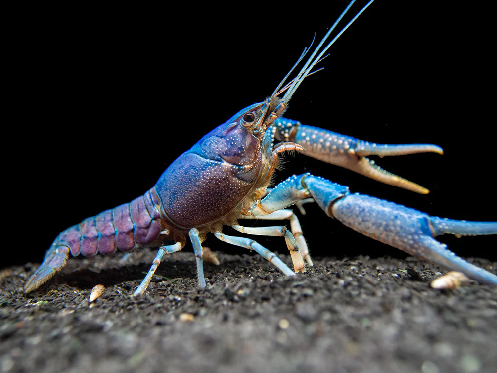
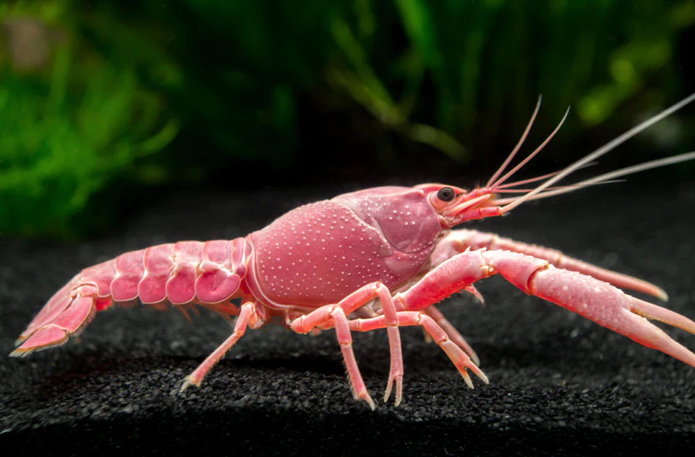

Crayfish, also known as crawfish or freshwater lobsters, are freshwater crustaceans that resemble small lobsters. They have a hard exoskeleton, two large claws, and a long, segmented tail. They typically range in size from 3 to 6 inches in length, although some species can grow up to 9 inches long.
Crayfish are typically found in freshwater streams, rivers, and lakes, where they feed on aquatic plants, insects, and small fish. They play an important role in aquatic ecosystems by helping to control populations of smaller animals and by serving as a food source for larger predators.
Crayfish are popular in many cultures around the world, where they are often boiled, steamed, or fried and served as a seafood delicacy. They are rich in protein, vitamins, and minerals, and are low in fat, making them a healthy and nutritious food choice.
In addition to their culinary uses, crayfish are also used for scientific research and as pets in aquariums. They are fascinating creatures that have captured the interest of scientists, fishermen, and food enthusiasts alike.


Australian Red Claw crayfish (Cherax quadricarinatus) is a popular species for meat production due to its sweet, tender, and succulent meat.

Louisiana Red Swamp crayfish (Procambarus clarkii) is a popular species for meat production due to its high protein content and delicious flavor.